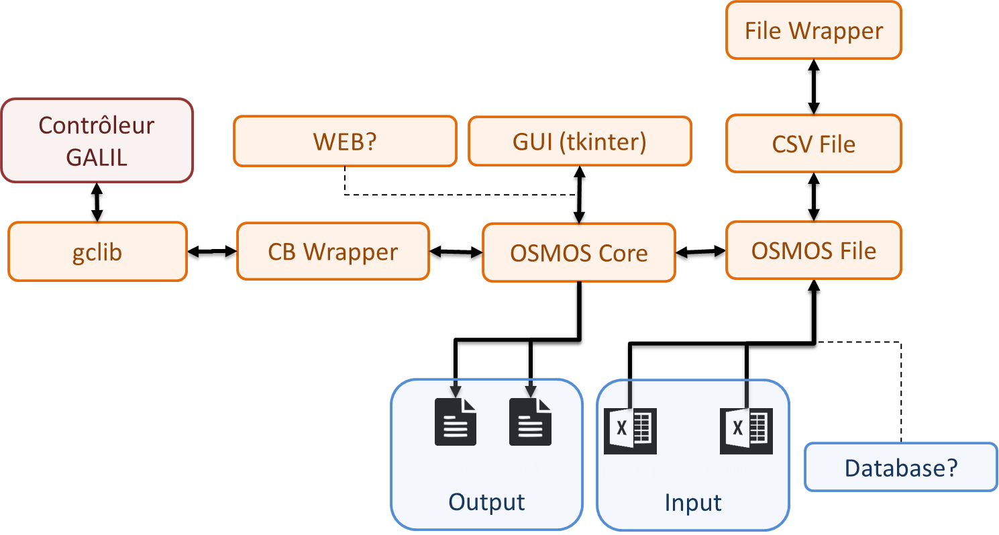

OSMOS DevGuide (WIP)#
WELCOME HERE! This documentation intend to show you how to modify or improve OSMOS software.
Description#
OSMOS is a tool wich can communicate with the GALIL controllers of SOLEIL,
extract the parameters/variables/microcode and write the into a file .bak
This file is parsed according to GALIL format allowing to upload those settings into the controller
A .log file is generated indicatig if everything went right during the download
The user can configure the software through 2 .csv files wich are described below
Software Architecture#
How OSMOS has been designed is represented by the software architecture below:
The main objective of the software is to generate the .bak file as long as the .log file.
File format explanation#
Backup File#
The Backup file is designed to save the common used GALIL parameters, as long as the microcode and/ or the variables/microcode. This file has a important specific format understandable by the official GALIL software wich is used to download those parameters back in a GALIL controller.
here is an example of a part of a backup file:

Note
It will be considered that you know the specifications of all the forms of this file. As much as you know the priciple functionning of GALIL motion systems. If you want an example, you can run GalilSuite software or OSMOS on a functionning controlbox
It is possible to add, remove or modify any parameters. It is possible to modify the way it written in the file as well
through the .csv file called : “OSM_LIST_CDE.csv”.
Its default location is /OSMOS/Documentation/Reference/
Note
Note tha a user can choose an other file than this one.
Log File#
Its only purpose is to indicate either something went wrong or not during the backup of parameters.
here is an example of a log file:

It exists 2 type of connections to a Powerbrick. You can connect through the “maintenance port”. This ethernet port exists on every PowerBrick and always has the same adress.
The other way allows you to enter an IP adress manually.
Attention
Be careful on wich you are able to connect or not. The software doesn’t check what device is on the network. He is pretty simple.
IP Adress Type |
Description |
|---|---|
Default IP Adress |
Maintenance Adress 172.168.0.200 |
Custom IP adress |
any Standard PBR adress |
How To Download#
The Download feature allows you to extract setups (in folders form or in files form) of a Power Birck. You’ll have to select what setup you want to download. It goes from “usrflash” for the most recent parameters to “usrflash.5” for the oldest.
Note
Choosing a path to download is not implemented yet. The files downloaded are put where the script is run.
You can then, press on the green button “Download”.
How To Upload#
Caution
Because of a bug, the dynamic update of the GUI does’nt work. So you need to press on buttons to get the entry fields (ip address Entry) enabled.